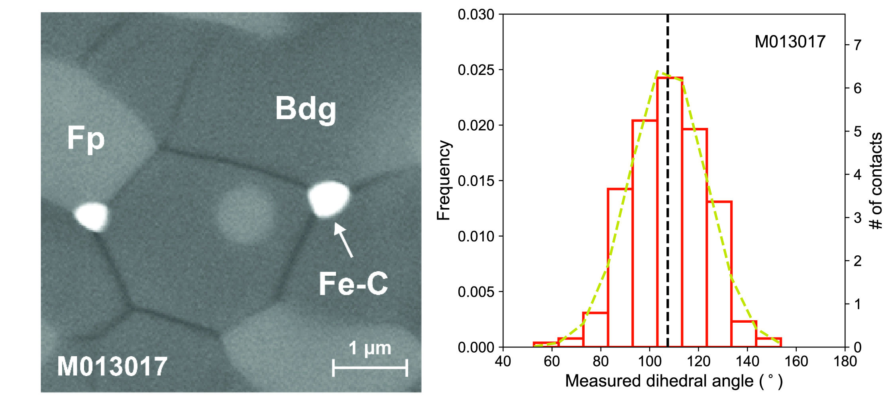

|
ABSTRACT
Metallic melt containing iron (Fe) and carbon (C) may be present at depths greater than 250 km inside the Earth. Depending on its wetting behavior, such dense melt may be trapped locally or drain into deep mantle and core. Here, we report experimental data on the wetting behavior of Fe-C melt in silicates at the conditions of Earth's mid-mantle between 10 and 23 GPa and 1600 and 1800 ℃. The measured dihedral angles of Fe-C melt in olivine, ringwoodite or bridgmanite and ferropericlase matrixes are 117±14°, 120±14° and 107±16° respectively, well above the critical value of 60° for complete wetting. The estimated percolation thresholds are at least 7% in volume, far exceeding the amount of metal in the mantle. Consequently, slab-derived Fe-C melt in the mid-mantle is expected to occur as isolated pockets and would not percolate through its silicate matrix.

|